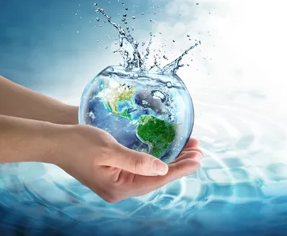

Por que a Água é Importante?
A água é essencial para a vida na Terra. Ela desempenha um papel fundamental na manutenção dos ecossistemas, na saúde humana e no desenvolvimento econômico.
Além disso, é um recurso insubstituível em processos industriais, agrícolas e domésticos. Sem ela, a produção de alimentos, a geração de energia e até a higiene básica seriam impossíveis.
Cerca de 70% do corpo humano é composto por água, o que mostra sua importância fisiológica. Do mesmo modo, sociedades inteiras dependem de fontes seguras de água para garantir sua sobrevivência e prosperidade.
Funções Vitais da Água
- Manutenção da saúde humana, incluindo hidratação e higiene
- Regulação do clima e dos ciclos naturais
- Suporte à agricultura e à produção de alimentos
- Geração de energia em hidrelétricas
- Transporte fluvial de pessoas e mercadorias
- Base para a produção industrial de diversos setores
A água também atua como solvente universal em reações químicas e biológicas. Sua versatilidade permite seu uso em limpeza, produção de bens e processos químicos fundamentais.
Desafios Relacionados à Água
Apesar de sua importância, a água enfrenta desafios como:
- Poluição e contaminação de fontes de água
- Desperdício e uso ineficiente
- Impactos das mudanças climáticas
- Falta de acesso a água potável em comunidades vulneráveis
- Gestão inadequada dos recursos hídricos
- Conflitos por uso entre setores agrícolas, urbanos e industriais
Com o crescimento populacional e o aumento da demanda por água, esses desafios tendem a se intensificar. A má distribuição também acentua a desigualdade social, pois algumas regiões concentram mais recursos enquanto outras enfrentam escassez extrema.
Como Preservar a Água?
Para garantir a disponibilidade de água para as futuras gerações, é necessário:
- Reduzir o consumo e evitar o desperdício
- Proteger nascentes e rios
- Investir em saneamento básico e tratamento de esgoto
- Promover a conscientização sobre o uso sustentável da água
- Reutilizar a água sempre que possível, especialmente em processos industriais
- Adotar práticas agrícolas mais eficientes, como irrigação por gotejamento
Pequenas ações no dia a dia, como fechar a torneira ao escovar os dentes ou consertar vazamentos, também fazem grande diferença quando adotadas por muitas pessoas ao mesmo tempo.
Teste seus conhecimentos sobre a água!
1. Qual é a porcentagem de água no corpo humano?
2. Qual é a principal função da água na agricultura?
3. Quais ações são importantes para preservar a água?